Hello there! My name is
Mona Faye Molina
I am an aspiring software engineer. I am looking to grow in the field of information technology and take on more technical roles where I can apply and expand my skills. I am eager to contribute what I know while learning even more. I'm passionate about using tech to solve real problems and excited to take the next step in my IT career.
Let's make things happen!

Featured Projects
Aqua Care GreenGuard: Nurturing Plants with Precision — Real‐Time IoT Soil Moisture Monitoring
- Developed a real-time IoT soil moisture monitoring system as a way to reduce water wastage
- Implemented an automated irrigation system
- Developed an application that enables users to manage and monitor their plants
Rxplorer: Smart Healthcare Guide: Medicine Recommendations, Nearby Pharmacies, and Emergency Services Integration
- Prototype using Figma
- Project Idea: A Mobile Responsive Web-Based Application for Travelers or Expatriates
- Your personal health companion
- Provides medicine recommendations, locating nearby pharmacies, and integrating emergency services
Profile/Portfolio Making using Carrd
Photoshopped Projects
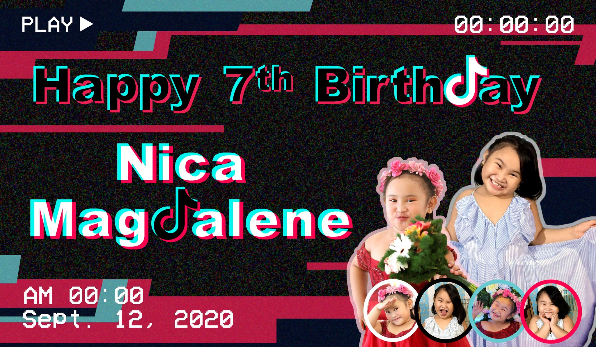
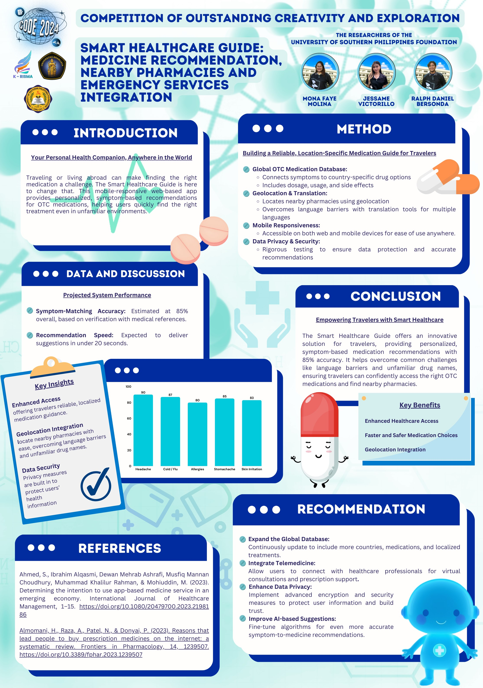
Technical Skills
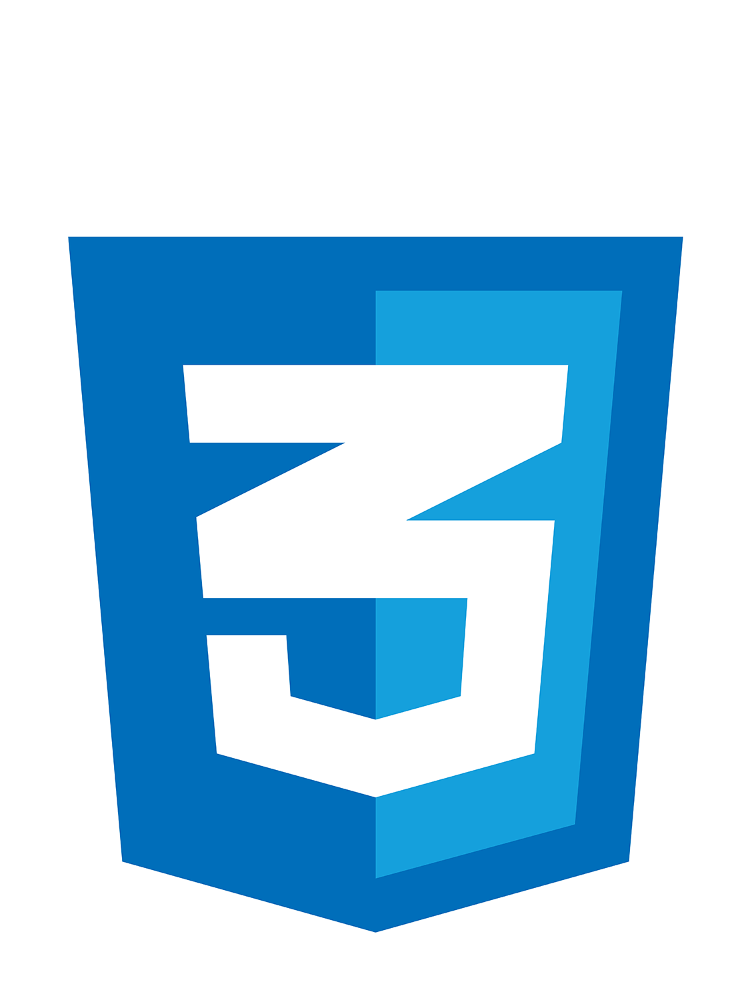
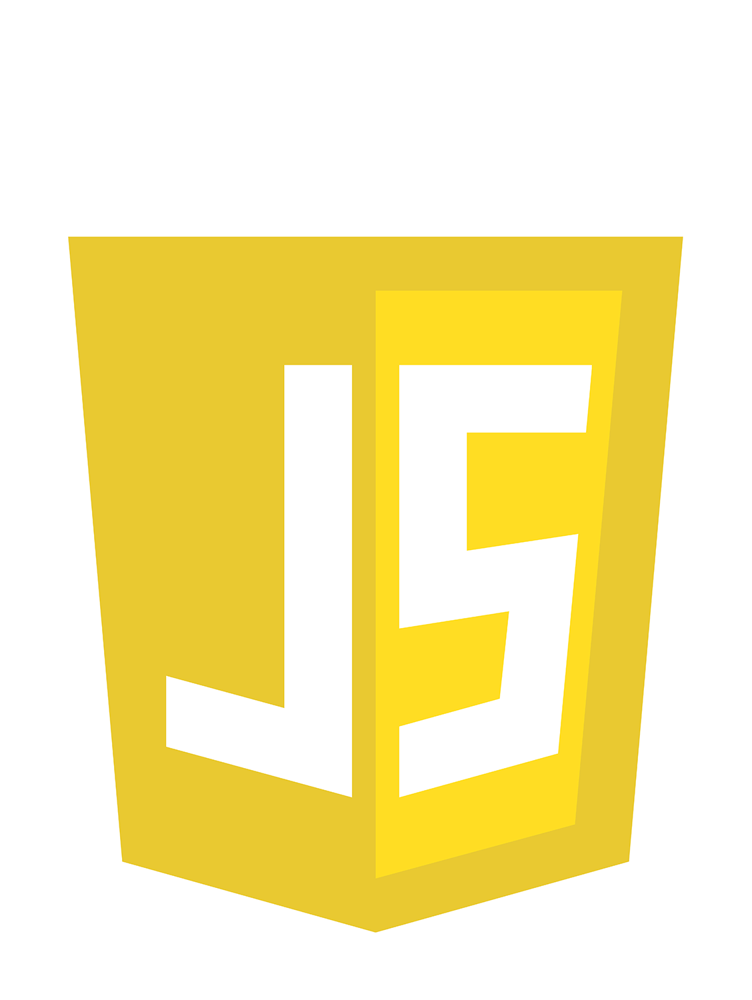
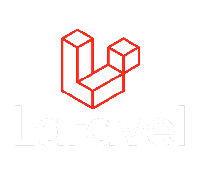
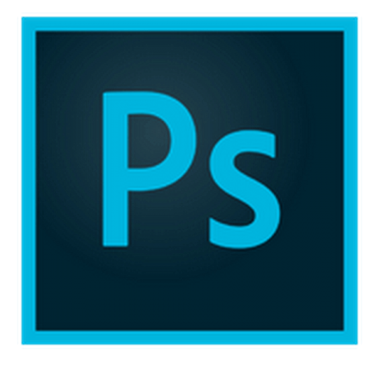
Certificate & Awards
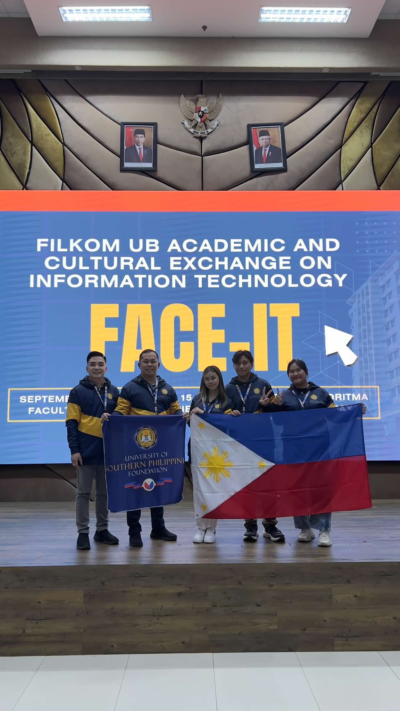
FILKOM UB Academic and Cultural Exchange on Information Technology (FACE IT) Program
September 16, 2024 - November 15, 2024
One of the selected students to particate the 2024 FILKOM UB Academic and Cultural Exchange on Information Technology (FACE IT) program, hosted by the Faculty of Computer Science of the Universitas of Brawijaya in Indonesia. FACE IT focuses on Data-Driven Decision Making , Data Visualization, and AI.
2nd Best Paper Presentation
October 10, 2024 | FACE IT Program | Role: Group Leader
Won 2nd Place for Best Paper Presentation at the FACE IT Program Competition under the Health and Medical Category. Showcased a research for an innovative solution to enhance healthcare services entitled "Smart Healthcare Guide: Medicine Recommendations, Nearby Pharmacies, and Emergency Services Integration"
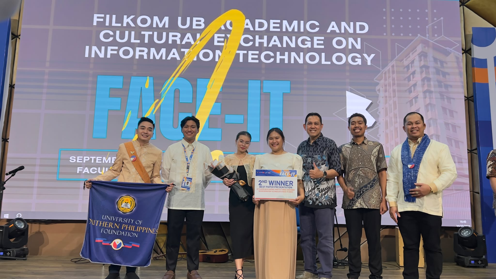
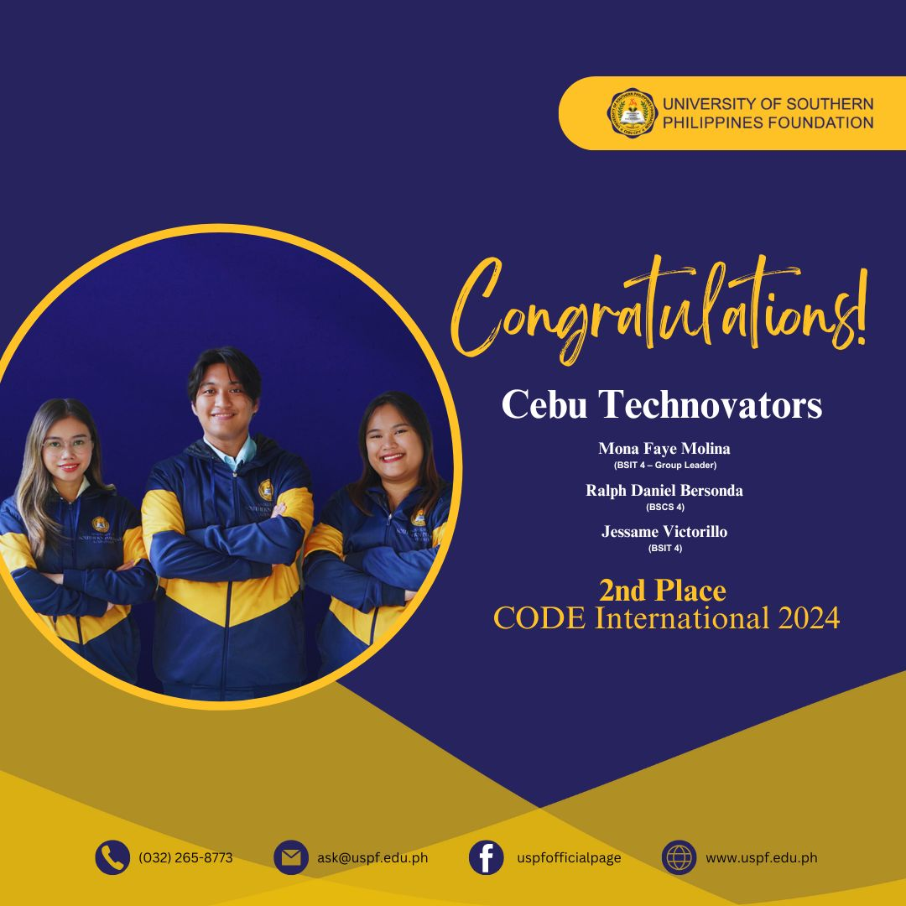
2nd Winner
November 16, 2024 | CODE International 2024 | Role: Group Leader
Won 2nd place for the second time at the CODE (Competition of Outstanding Creativity and Exploration) International 2024, besting over 100 other teams from across the globe. Our group, Cebu Technovators, authored the project entitled, "Smart Heatlhcare Guide: Medicine Recommendation, Nearby Pharmacies, and Emergency Services Integration", under the Health and Medical category. The CODE International program was hosted by Kelompok Riset Mahasiswa (K-Risma) of Brawijaya University, Indonesia, highlighted the theme "Sustainable Technologies for an Enhanced World: Global Collaboration in Innovation and Creativity to achieve the SDGs."
University Research Congress Participant
February 12, 2024 | Research Congress | Role: Programmer
My team and I were selected to represent the College of Computer Studies and present our system project, AquaCare GreenGuard at the University of Southern Philippines Foundation Research Congress 2025. This is an annual event organized by the school's Research Center for the faculty and non-faculty staff to present their research through podium presentations and poster exhibits.
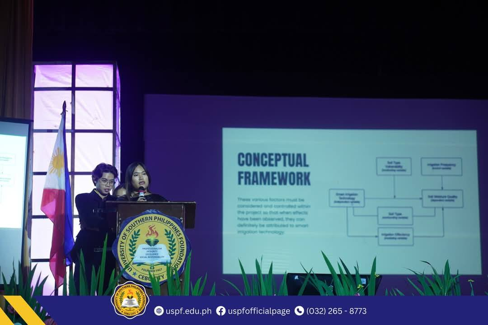
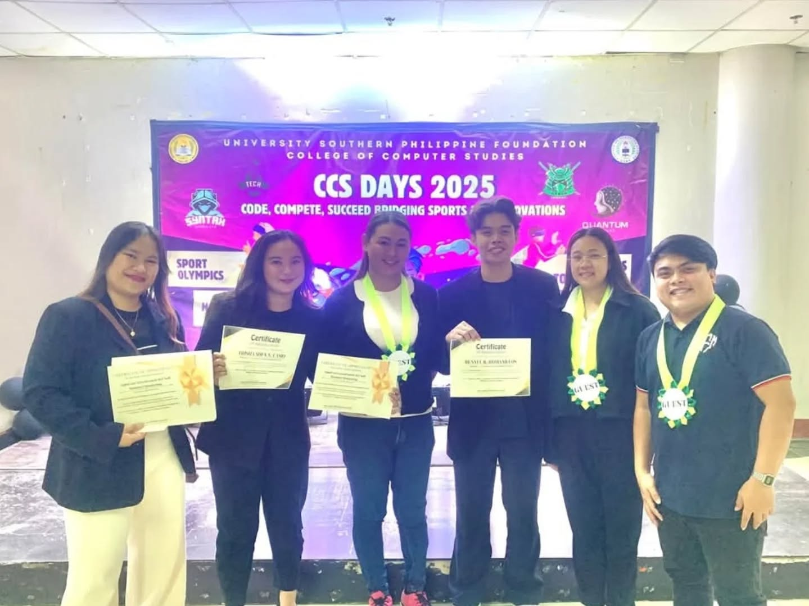
1st Place Presenter
March 12, 2025 | Southern Innovation Research Forum | Role: Programmer
My team won the 1st place presenter in the Southern Innovation Research Forum during the CCS Days 2025 where all the 4th year students showcased their ingenuity, presenting groundbreaking thesis and capstone projects at the University of Southern Philippines Foundation.
Have Questions? Ready to get started?
Contact Me
I'd love to hear from you